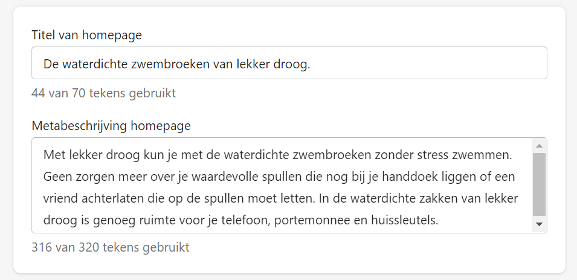

Aanpak schrijven van teksten
Voor de webshop heb ik voor verschillende pagina's de tekstuele content
geschreven. Voor deze content was het belangrijk om de tekst te optimaliseren voor drie doeleinden: de SEO
om zo hoog mogelijk in de zoekmachines te komen en om tekstuele content te creëren die aansluit bij de tone
of voice en doelgroep van het merk lekker droog.
Zoekmachines
Bij het schrijven van de teksten gericht op de zoekmachines heb ik
gebruik gemaakt van de zoekwoordanalyse die ik hiervoor heb uitgevoerd. Uit deze zoekwoordanalyse zijn de
volgende belangrijkste zoekwoorden ontstaan: "Waterdichte zwembroek" en "Zwembroek met waterdichte
zakken". Dit is bijvoorbeeld te zien in de onderstaande afbeelding waarin de header te zien is.
Zoals in de afbeelding hieronder te zien is heb ik in de teksten ook gebruik gemaakt van synoniemen voor
waterdichte zwembroek zoals bijvoorbeeld:
"waterafstotende zwemkleding" of van zoekwoorden die het probleem omvatten zoals: "Waar laat
ik mijn spullen op het strand?"
Doelgroep en tone of voice
De eerste stap hiervoor was het achterhalen van de doelgroep. Dit heb ik
doormiddel van een interview gedaan. Hieruit is een doelgroep gekomen: mannen tussen de 17 t/m 23 die vaak
met vrienden op pad gaan en in de zomer regelmatig lekker gaan zwemmen. Deze doelgroep is veel te vinden op
social media en dan in het bijzonder Instagram daarom is social media een belangrijk uitgangspunt van de
website.
De tone of voice of van lekker droog is als volgt: lekker droog
communiceert altijd op een relaxte manier met klanten. Zelfs wanneer er even iets fout gaat blijft de
klantenservice rustig, het komt allemaal goed. Zij stellen zich professioneel op, maar er is altijd ruimte
voor wat humor, want we blijven droog. Onze doelgroep is jong dus we spreken ze op een vlotte manier aan met
teksten en beelden die deze groep aanspreekt, dit zullen korte teksten zijn waar onze droge humor in is
verwerkt.
Technische SEO
Voor het realiseren van de lekker droog website hebben we als groep
gebruik gemaakt van Shopify. In Shopify heb ik verschillende werkzaamheden uitgevoerd zodat we hoger in de
zoekmachines terecht komen.
Sitemap
Van elke pagina van de lekker droog website is een XML sitemap
gegenereerd zoals bijvoorbeeld lekkerdroog.nl/cart.xml of lekkerdroog.nl/orders/sitemap.xml. Hierdoor
kunnen zoekmachines de website makkelijk lezen doordat de pagina's geïndexeerd kunnen worden waardoor weer
makkelijker de informatie gevonden kan worden.
Meta titel en beschrijving
Voor de webshop heb ik per pagina de meta titel en beschrijving ingevuld.
Het was hiervoor van belang dat de zoekwoorden "waterdichte zwembroek" en "zwembroek met waterdichte zakken"
in de beschrijving terug kwamen.

Alt tekst
Om organisch hoger in de zoekresultaten te komen heb ik de afbeeldingen
op de webshop een alt tag aan de afbeelding meegegeven. Dit is nuttig voor browsers die geen afbeeldingen
weergeven of voor mensen met een visuele beperking die software gebruiken om de inhoud te kunnen horen.
Reflectie
Ik had al vaker content voor websites geschreven maar deze content was
altijd gericht op de tone of voice van het merk of content die past bij de doelgroep. Voor de lekker droog
webshop heb ik voor het eerst content gemaakt wat gericht is op zoekwoorden.
Ik heb door het schrijven van de lekker droog website content geleerd om content te schrijven voor een website vanuit drie invalshoeken. De tone of voice van het merk, gericht op de doelgroep en door middel van zoekwoorden om zo hoog mogelijk in de zoekmachines te komen.
Ik heb door het schrijven van de lekker droog website content geleerd om content te schrijven voor een website vanuit drie invalshoeken. De tone of voice van het merk, gericht op de doelgroep en door middel van zoekwoorden om zo hoog mogelijk in de zoekmachines te komen.